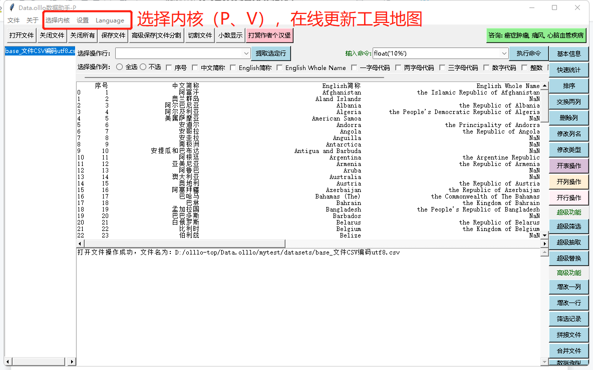
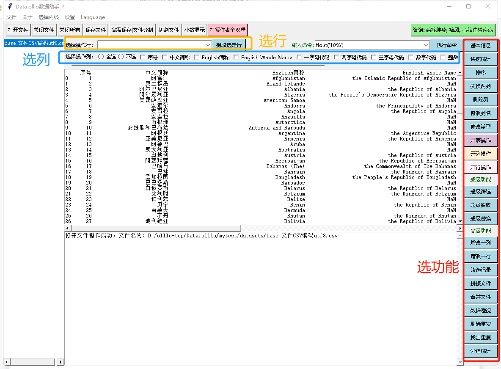
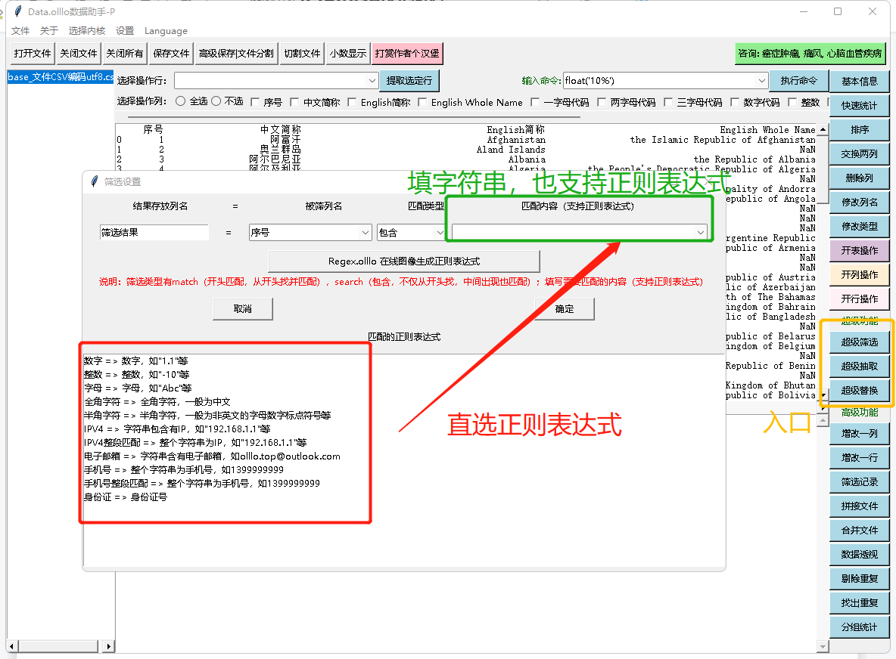
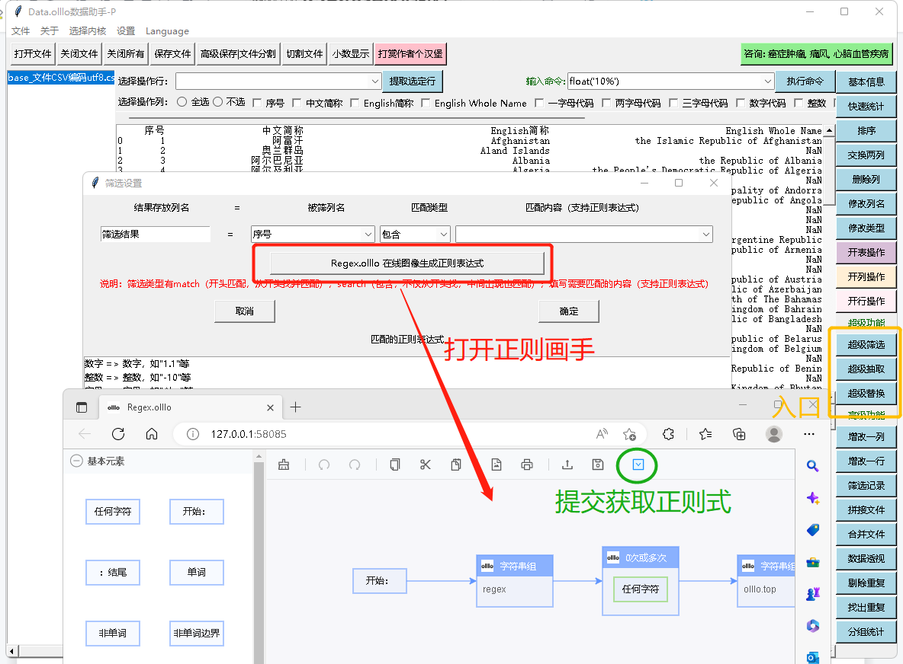
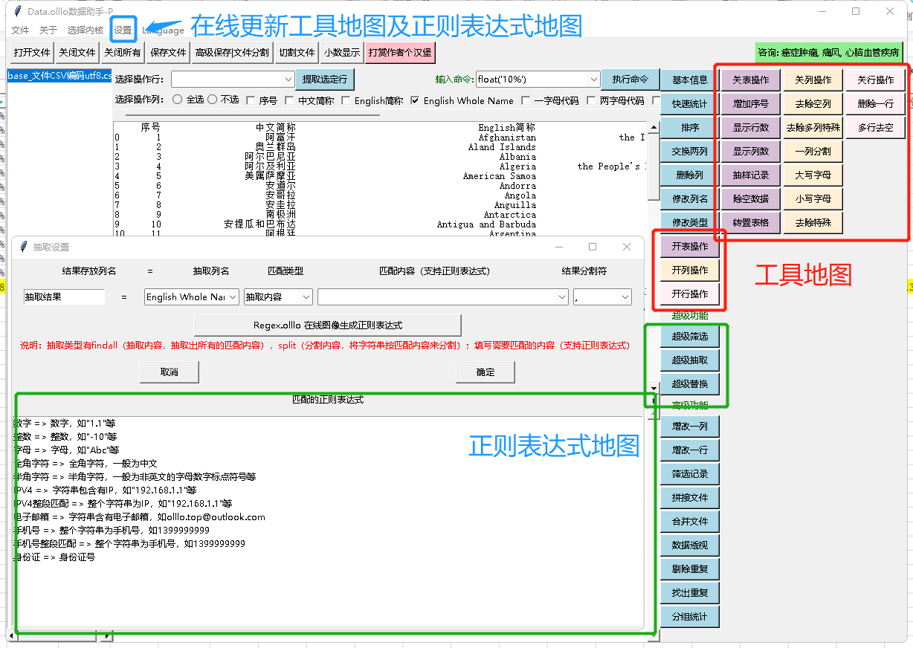

Data.olllo Data Assistant
Data.olllo Data Assistant is the best data software in the world, with two cores (P core and V core) that support processing various data files.

Software Basic Description:
- Running speed: fast, very fast, extremely fast.
- Data file types:
- P core
- Open file support: csv, xlsx, xls, dbf, json, html, xml, clipboard, h5, hdf5, hdf, feather, parquet, dta, sav, pkl, sas7bdat, xpt, sas, spss, table, gbq, fwf, orc;
- Save file support: csv, xls, xlsx, pkl, clipboard, json, html, xml, latex, h5, hdf5, hdf, feather, parquet, orc, dta;
- V core
- Open file support: csv, arrow, hdf5, parquet, feather, fits, ascii, json, xlsx, xls, dbf;
- Save file support: arrow, hdf5, parquet, feather, fits, csv, xls, xlsx, json
In theory, P and V cores can communicate with each other to open files, and can be shared with another core by opening one core and then saving it as CSV or other formats.
- Data file size: large, very large, extremely large. Data.olllo Data Assistant P core can handle data ranging from tens of millions to hundreds of millions. If the data volume is too large to open, use the V core, which supports super-large data files. How big it is depends on how big your disk and file are~ It supports all sizes.
- Support file encoding: What code do you have? :) Supports manual input of various codes, and of course, automatic detection of encoding.
- Toolbox online update: Supports online update of the toolbox and super options in the super function.

Basic Functions of the Software
- Open various types of files: Supports batch opening of various types of files with the same type or consistent encoding;
- Splice files while opening: V core supports splicing multiple files and opening them as one file (splicing multiple files with the same field); P core can also use function keys to splice multiple files into one file after opening multiple files.
- Save files in various formats, see the supported formats for details.
- Split and save files: You can split and save files according to size or keyword.
- File splitting: P core supports direct splitting without opening files because the file size opened by P core is not as large as that of V core.
- Display the number of rows and columns: You can choose the number of rows and columns to display for easy viewing.
- Close files: Close files without saving, support batch closing.
- There is a special basic function, which is to open the QR code to reward the author at any time. :)

Software Data Processing Functions
- Flexible selection set: select all, deselect, row select, column select;
- Basic information: display the basic information of the data set;
- Quick statistics: quickly calculate the maximum, minimum, average, etc. of the data set;
- Quick sort: support single-column and multi-column sorting, according to the order of columns, if you need to change the order, use the swap two columns function first;
- Swap two columns function: select two columns to swap the order;
- Delete rows, delete columns: delete selected rows, columns
- Modify column name, modify column type (string, integer, decimal)
- Edit a row or insert a row: edit or insert a row
- Edit a column or add a column:Edit a row or add a column (supports multiple operations of +, -, *, / of data types and + operation of string types), try it and you will know.
- Filter records (rows):Support filtering rules of "equal to, not equal to, greater than, less than, greater than or equal to, less than or equal to" of data types or string types.
- Splicing files:Multiple files are spliced vertically;
- Merge files:Two files are spliced horizontally, according to keywords, where the P core requires the keyword name to be the same (if different, use the modify column name to change it to the same), and the V core has no requirements for the keyword, but it is not allowed to merge two data tables with the same field name (use the modify column name function to change the column name first).
- Data Pivot: Similar to a pivot table, select the columns and rows, what content to view, and what type to view (total, average, etc., can be viewed together), and then pivot; of course, you can also select columns without selecting horizontal, and you can still pivot.
- Remove duplicates: It is to extract which completely duplicate data, and you can choose to keep or not keep, keep the first or last one.
- Duplicate Finder: Find duplicates.
- Grouping and Statistics: Total, average, maximum, and minimum are classified by keywords.

Super Data Processing Functions of the Software
The super functions that must be mentioned include super filtering, super extraction, and super replacement; the so-called super means super, supporting ordinary strings and rule description methods (regular expressions); for regular expressions, a function is provided to draw the expression, which is convenient for people who do not want to learn regular expressions but want to use them.
With this super function, everything such as searching, filtering, screening, replacing, matching, selecting content, etc., can be done.

- Super filtering: can filter the selected columns, and the filtering results exist in a new field of this data table; for example, if you want to see if there is a mobile phone number in a certain category, select the mobile phone number regular expression, and then determine it. The result is saved. If it is True, it means that there is a mobile phone number. If it is False, it means that there is no mobile phone number. At this time, if you want to extract the whole thing, use the "Filter Records" function to judge whether it is equal to True or equal to False.
- Super extraction: can extract the content of the selected columns, and the result exists in a new field of this data table; for example, extract the mobile phone number of a certain field column, select the mobile phone number regular expression, and then determine it. The result is extracted to a new column (you can name it).
- In Super extraction, you can also use the content as a separator; for example, for a field, I want to use numbers as a separator (the numbers are different), then select the "Split Content" in Super extraction, and then select the number regular expression, and then determine it. After that, you can get a new column that contains the separated content.
- Super replacement: can replace the matched content with what you want; for example, if you want to replace the mobile phone number with 139xxxxxx, then select the column, then select the mobile phone regular expression, fill in the replacement content as "139xxxxxx", and then determine it. The replacement result exists in a new column. Find it and see.
- In Super functions, there is also a graphic generation regular expression, there are examples inside, try it and you will understand. Regex.olllo Regular Expression Painter is also an interesting application of the olllo series.

Software Command Mode
The software is developed in Python and supports Python statements. The data table is called df. If you know programming, you can directly write statements on it and then execute them. Look at the examples of statements above, and you will understand them quickly.
Command mode can do anything, because it is programming.
Six, Online Tool Map and Online Regular Expression Map
The tool map and regular expression map will be updated from time to time, and you need to update them manually. The functions will increase a bit.

Software Price
The price is no price, use it as you like. If you are happy, just reward, encourage, and sponsor. The author hopes to make a free and easy-to-use leading tool that keeps improving. Appreciation, admiration, and reward will give motivation to do better and more wonderful things.
olllo team, February 2023